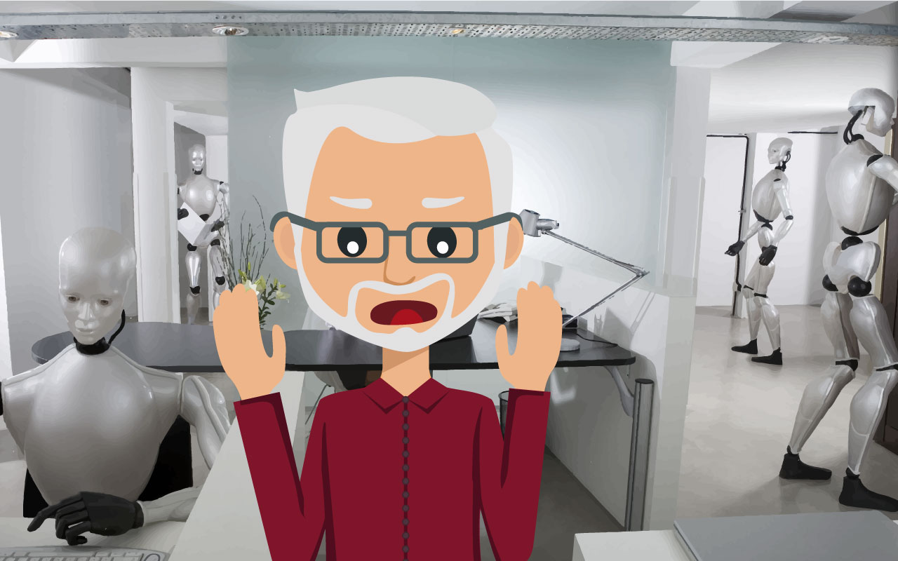

Location:
Copyright 1994 Netscape Communications Corporation, all right reserved
This software is subject to the license agreement set forth in the Licence file.
Aujourd’hui, j’ai décidé de me focaliser sur les prémices et les premiers balbutiements des interfaces graphiques. Tout d’abord, j’aimerais vous rappeler la définition de la notion d’interface graphique. Les interfaces graphiques sont des dispositifs de dialogue hommes-machines, où l’interaction est rendue possible grâce à la simplification et l’ergonomie des éléments à manipuler (pictogrammes, pointage, fenêtrage, souris etc). J’espère que vous réussirez à garder en tête cette définition ! Passons donc aux choses sérieuses !
Pour débuter mes recherches sur ce thème, je me suis d’abord tourné vers les travaux d’Ivan Sutherland, un ingénieur informatique diplômé du MIT qui est considéré comme un des pionniers de la modélisation 3D, de la simulation visuelle et de l’interface graphique. En effet, il est à l’origine du Sketchpad, la première interface graphique de l’histoire de l’informatique. Il est considéré comme le précurseur des logiciels de conception assistée par ordinateur (CAO) et a ouvert la voie aux interfaces homme-machine (IHM).
En 1963, le Sketchpad était une petite révolution. En effet, j’ai eu la chance de le tester lors d’un séminaire sur l’IHM des années plus tard… C’était un réel bijou technologique à l’époque de son invention. La machine possédait un logiciel de dessin interactif. Ainsi, l’utilisateur pouvait agir directement sur le périphérique, et ce de manière graphique. Sutherland avait pensé à tout. Le zoom, ou même les actions copier / coller sont directement issus de cette invention. Elle permettait même aux utilisateurs de facilement contrôler les propriétés géométriques du dessin, ce qui était une réelle nouveauté à l’époque! Il était aussi possible, par exemple, de régler la longueur d’un segment ou l’angle entre deux lignes. Les interfaces tactiles que l’on utilise aujourd’hui sont aussi inspirées du Sketchpad. Sauf que dans les années 60, on utilisait des écrans cathodiques et un stylet optique pour interagir avec la machine. Je suis certain que Thomas, mon petit-fils, serait surpris de voir que le téléphone qu’il utilise aujourd’hui puise son inspiration dans une vieille machine d’après-guerre !
L’arrivée du Sketchpad en a surpris plus d’un à l’époque. Je n’avais que 12 ans et pourtant… J’entends encore mon père me faire l’éloge de cette interface interactive, et de sa prise en main quasi intuitive. Il m’avait d’ailleurs confié qu’une telle invention donnerait naissance à l’informatique grand public… Il avait raison !
J’ai réussi à retrouver une vidéo sur le web, dans laquelle Sutherland lui-même fait une démonstration du Sketchpad. Je vous invite à la regarder de plus près, je suis sûr que cela vous intéressera ! Vous pouvez la retrouver ci-dessous :
Bonjour à tous ! Aujourd’hui, je vais aborder le sujet de Photoshop 1.0, un logiciel de retouche d’image édité par l’entreprise Adobe. Vous connaissez peut-être ce logiciel très populaire ? Si non, il faut savoir que son usage principal se concentre sur le traitement de photographies numériques, mais qu’il sert également à créer des images « ex-nihilo » (c’est à dire, en partant de « rien »). La première version de Photoshop fut révélée au grand jour en Février 1990. Avant de devenir Photoshop ce logiciel fut d’abord appelé « Image Pro ».
Sa création fut le fruit d’une collaboration entre un fabricant de scanner “Barneyscan” et Thomas Knoll, étudiant à l’université du Michigan. D’un point de vue des fonctionnalités, Photoshop pouvait littéralement transformer et colorer une image. Quant à son code source, il était en langage « Pascal ». Il est aujourd’hui possible de découvrir cette première version du logiciel au musée de l’histoire de l’ordinateur, en Californie.
Voici ce que Photoshop 1.0 pouvait offrir comme fonctionnalités à l’époque :
Je me souviens encore de mon voyage à la Silicon Valley où Thomas Knoll présenta cet outil plein de promesse et d’avenir… C’était une présentation exceptionnelle ! D’autant plus que si vous connaissez Photoshop, vous pouvez vous rendre compte ici que les outils de base du logiciel étaient tous déjà présents dans cette première version. Photoshop 1.0 était déjà très performant, et finalement les fonctionnalités principales du logiciel ont été mises en place dès le début, puis ont seulement été améliorées avec les versions suivantes.
Si vous voulez en découvrir plus sur l’utilisation et l’interface de cette première version de Photoshop, vous pouvez regarder la vidéo ci-dessous. Vous pouvez vous rendre compte ici que l’interface de base du logiciel a peu changé au cours des versions qu’a connu le logiciel. Seul l’esthétique a été améliorée, mais l’idée de base et les outils les plus importants étaient déjà en place dans cette version ! Incroyable n’est ce pas ? Je vous laisse en juger par vous même, avec cette vidéo de démonstration d’utilisation du logiciel !
Page introuvable, l'adresse ne doit pas exister